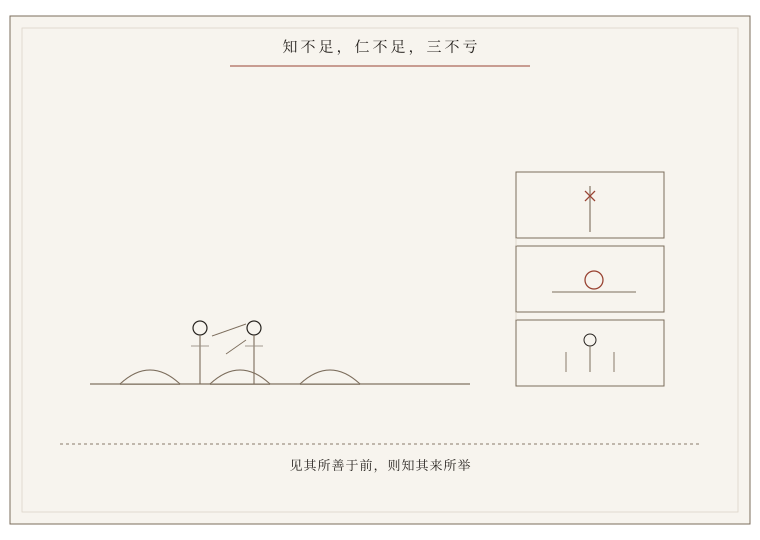

檀弓下 · 四·八十七 · 第 412 课
赵文子与叔誉观乎九原。文子曰：「死者如可作也，吾谁与归？」叔誉曰：「其阳处父乎？」文子曰：「行并植于晋国，不没其身，其知不足称也。」「其舅犯乎？」文子曰：「见利不顾其君，其仁不足称也。我则随武子乎！利其君，不忘其身；谋其身，不遗其友。」晋人谓文子知人。文子其中退然如不胜衣。
说什么事：赵文子与叔向在九原（晋卿墓地）上游观。文子说：「死者若可复起，我归从谁？」叔向说：「大概是阳处父罢？」文子说：「他在晋国专权刚强，不得善终，其知不足称。」「那么舅犯？」文子说：「见利不顾其君，其仁不足称。我呢，归随武子：利其君而不忘其身，谋其身而不遗其友。」晋人称文子知人。文子之身，柔退得像穿不住衣服。
落在哪一层：以「三处不亏」为界。对君、对身、对友，一处不缺，方称完人。
为何编在此位：上是「不失其为故」，此是「不失其为友」。一容一人，一评数人。
【经】赵文子与叔誉观乎九原。文子曰：「死者如可作也，吾谁与归？」叔誉曰：「其阳处父乎？」文子曰：「行并植于晋国，不没其身，其知不足称也。」「其舅犯乎？」文子曰：「见利不顾其君，其仁不足称也。我则随武子乎！利其君，不忘其身；谋其身，不遗其友。」晋人谓文子知人。文子其中退然如不胜衣。
【注】叔誉，叔向也，晋羊舌大夫之孙，名肸。／作，起也。／阳处父，襄公之大傅。／并犹专也，谓刚而专己，为狐射姑所杀。没，终也。植或为特。／谓久与文公辟难，至将反国，无安君之心，及河授璧，诈请亡，要君以利是也。／武子，士会也，食邑于随、范，字季。／见其所善于前，则知其来所举。／中，身也。退，柔和貌。
【疏】此一节论赵文子知人之事。○知叔誉是叔向者，案《韩诗外传》云「赵文子与叔向观于九原」，故知叔誉是叔向也。云「晋羊舌大夫之孙名肸」者，案《左氏》羊舌是邑名，晋大夫公族为羊舌大夫也。故闵二年《左传》云「羊舌大夫为尉」。羊舌大夫生羊舌职，职生叔向，是羊舌大夫之孙也。又昭三年《左传》叔向与齐晏子语云「肸又无子」，是名肸。○「死者如可作也，吾谁与归」者，文子云：此处先世大夫死者既众，假令生而可作起，吾于众大夫之内，而谁最贤，可以与归？○「并」犹专也，「植」谓刚也。文子曰：言处父唯行专权刚强于晋国，自招杀害，不得以理终没其身，是不能防身远害，以其无知故也，故云「其知不足称」也。
九原 晋卿大夫墓地。注云「九京」当作「九原」。
叔誉 叔向，名肸，晋羊舌氏。
作 起。谓死者复起。
谁与归 归从谁。谓谁最可师法。
阳处父 晋襄公之大傅。
行并植 「并」为专，「植」为刚。谓专权而刚强。
不没其身 不得善终。没，终也。
知 同「智」。
舅犯 狐偃，晋文公之舅。
见利不顾其君 谓及河授璧，要君以利。
随武子 士会，食邑于随、范，字季。
不遗其友 不弃其友。
中退然 中，身也；退，柔和貌。
不胜衣 承受不住衣服，极言其柔弱。
赵文子与叔向在九原游观。文子说：「死者若可复起，我归从谁？」叔向说：「大概是阳处父罢？」文子说：「他专权刚强于晋国，不得善终，其知不足称。」「那么舅犯？」文子说：「见利不顾其君，其仁不足称。我呢，归随武子：利其君而不忘其身，谋其身而不遗其友。」晋人称文子知人。文子之身，柔退得像穿不住衣服。
此章一问答，二评，一断。
问者在墓地，答者在三人。
一「知不足」、一「仁不足」、一「两不亏」——三层评价，一条尺子。
第一层 问在墓地 「观乎九原」——九原是晋卿世葬之地。
在死人堆里问「谁可归从」，此问最实。 墓地上无虚誉。
第二层 阳处父何失 注云「刚而专己，为狐射姑所杀」。
他的失不在无能，在「不能防身远害」。 疏云「以其无知故也」——知者，知人也、自知也。
第三层 舅犯何失 注云「及河授璧，诈请亡，要君以利」。
他随文公流亡十九年，功莫大焉；而及河一璧，把「义」换成了「价」。 疏评为「见利不顾其君」。
第四层 随武子何全 「利其君，不忘其身；谋其身，不遗其友」。
此三句，是《檀弓》给「完人」下的定义。 对君不亏，对身不亏，对友不亏。
世人多重其一对而轻其二：能利君者常忘身，能谋身者常遗友。
第五层 「晋人谓文子知人」 注云「见其所善于前，则知其来所举」。
知人之法，不在言，在「他所举的是谁」。 一个人举什么人，便见他自己要做什么人。
第六层 「其中退然如不胜衣」 注云「中，身也；退，柔和貌」。
评人如此之严，而其身柔得像穿不住衣。 严在口，柔在身——此两者并存，才是「知人而不刻」。
第七层 此章之分寸 不因一长掩一短，不因一短弃其人。
三人皆贤者，而皆有所不足。 礼之评人，从不给满分。
与今日何干 今之评人，多举其功而讳其失，或摘其失而没其功。
此章给一句：看一个人举谁，比听他说什么更准。
| 左 | 右 |
|---|---|
| 观乎九原 | 晋卿墓地 |
| 死者如可作 | 假令复起 |
| 吾谁与归 | 谁可师法 |
| 阳处父 | 专而刚，知不足 |
| 不没其身 | 不得善终 |
| 舅犯 | 要君以利，仁不足 |
| 随武子 | 君身友三不亏 |
| 谓文子知人 | 观其所举 |
| 退然不胜衣 | 柔在其身 |
画一幅简略的墓地场景，视点平视。画面下方横贯一条地平线，线上并排三座扁拱小坟，坟间留出空隙。坟前立二人，身形修长，一人举手指向前方，一人侧身倾听。画面右侧竖列三个小方框，自上而下依次：第一框内一根竖线，被一道短叉划过；第二框内一块圆璧悬于一道横线之上；第三框内一个人形，其左右各画一条短竖线。三框之间以细线相连。不画文字。赭色只用在那块璧上。
